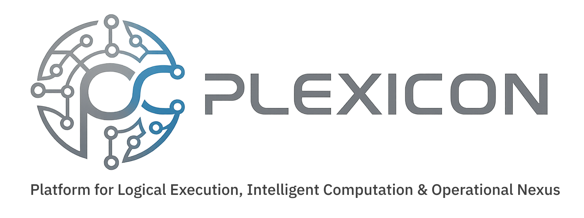

Plexicon owns and develops proprietary intelligence architecture for adaptive systems, learning engines, behavioural intelligence, governed AI orchestration and institutional memory.
A modular architecture that coordinates learner state, structured learning blocks, predictive routing and selective model escalation.
A high-level behavioural state system that interprets interaction patterns, motivation signals and longitudinal learning behaviour.
A curriculum abstraction and dependency-routing system that maps knowledge into structured, reusable and assessable units.
Plexicon’s technology portfolio is designed to support multiple deployment layers, including education, enterprise training, institutional compliance, workflow systems and future AI-native operating environments.
Public descriptions remain intentionally high-level to protect proprietary implementation logic, patent strategy and commercial architecture.